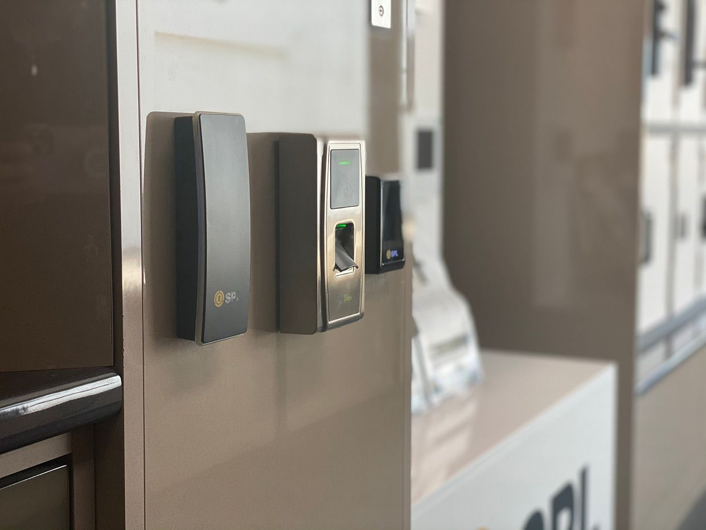
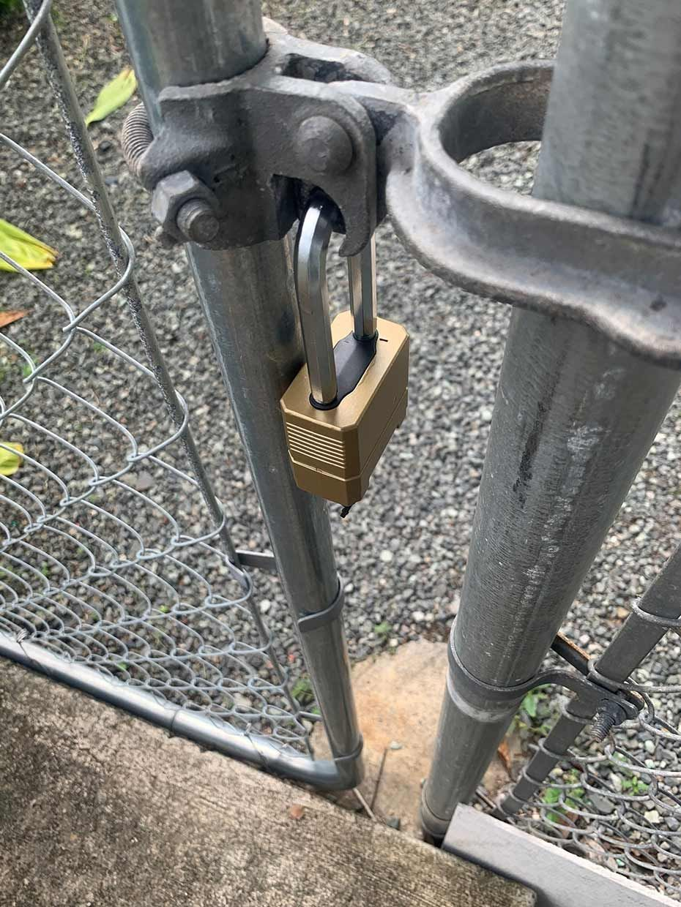

On this page
AT A GLANCE
At SPL Security Solutions, we offer reliable 24/7 mobile locksmith services across Hope Island, providing expert help whenever and wherever you need it.
Get A Free Quote Now!

Mobile Locksmith Service Hope Island
At SPL Security Solutions, we offer reliable 24/7 mobile locksmith services across Hope Island, providing expert help whenever and wherever you need it. Whether you’re locked out, require urgent lock repairs or want to enhance your property’s security, our professional team ensures fast and effective solutions.
We come equipped with state-of-the-art tools and a comprehensive range of lock and key components, enabling us to address a whole range of lock-related issues during our first visit. From resolving emergencies to completing planned security upgrades, we’re committed to delivering a seamless service every time.
Call us on (07) 5588 8111 to experience expert locksmith support in Hope Island.
Our residential locksmith services in Hope Island focus on securing your home with practical and advanced solutions. From fixing damaged locks to installing modern smart lock systems, we ensure your property and loved ones are protected.
Businesses in Hope Island rely on our locksmith services for advanced security solutions. Whether you need access control systems, high-security locks or urgent lock repairs, we deliver tailored services to protect your assets.
Our automotive locksmith services in Hope Island include quick responses for car lockouts, ignition repairs and key replacements. We have the capabilities to program transponder keys and resolve other auto issues efficiently.
Our restricted key systems in Hope Island offer a higher level of security by preventing unauthorised key duplication. These systems are ideal for homes and businesses requiring strict access control.
We provide safe services in Hope Island, including unlocking, maintenance, and combination updates. Our solutions protect your valuables with reliable safes designed to resist theft, fire and water damage.
Our security systems in Hope Island integrate CCTV, alarms and access control for complete property protection. We customise each system to meet the unique needs of residential and commercial properties.
Our lock hardware solutions in Hope Island include robust deadbolts, innovative smart locks, and tamper-proof mechanisms. We provide installation and maintenance services to enhance your property’s security.
Upgrade your property’s doors with our premium door hardware in Hope Island. From sleek handles to durable hinges and sliding door mechanisms, we offer functional and stylish options.
We source functional and stylish door hardware, featuring fire-resistant elements, seamless door closers, and decorative handles to complement diverse architectural styles in Hope Island.
Emergency Locksmith Services Hope Island
Emergency situations can arise unexpectedly, requiring swift action to restore security and access.
- Locked out of your property
Whether you’ve locked yourself out of your home, office or vehicle, we offer quick and damage-free solutions to get you back inside. - Keys lost or stolen
Missing keys can leave your property vulnerable. We provide rekeying or lock replacement services to give you peace of mind. - Faulty or damaged locks
A jammed or broken lock can compromise security or restrict access. We repair or replace locks to restore functionality immediately. - Malfunctioning electronic locks
Smart locks or digital entry systems can fail without warning. We diagnose and resolve issues to keep your systems running smoothly. - Safe access problems
Forgotten combinations or a jammed safe lock can cause delays. We offer professional safe services to regain access.

Contact Details
24/7 Emergency Locksmiths or Security Tech
Trading Hours
Retail Shop

Frequently Asked Questions
-
What should I do if my car key fob stops working?
If your car key fob stops working, first check the battery and replace it if necessary. If the issue persists, a locksmith can reprogram or replace the fob to restore functionality.
-
Can I have my locks rekeyed instead of replaced?
Yes, rekeying is a cost-effective way to enhance security without replacing the entire lock. It changes the internal mechanism so old keys no longer work while keeping the lock itself intact.
Locksmith & Security Solutions Gold Coast, Brisbane & Northern NSW